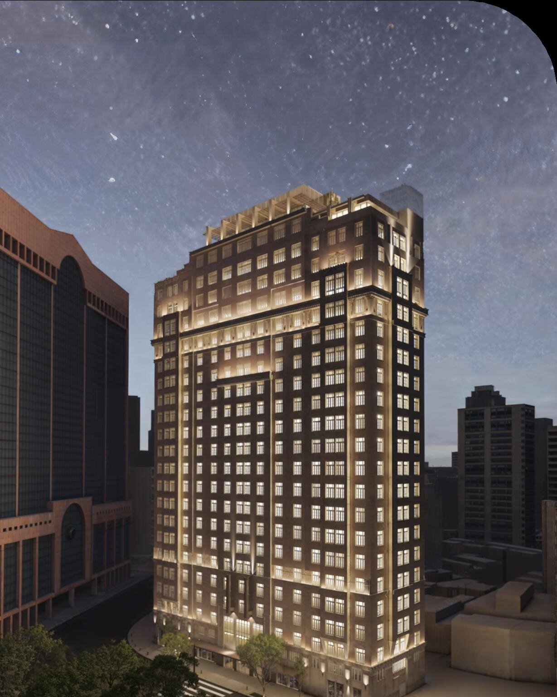
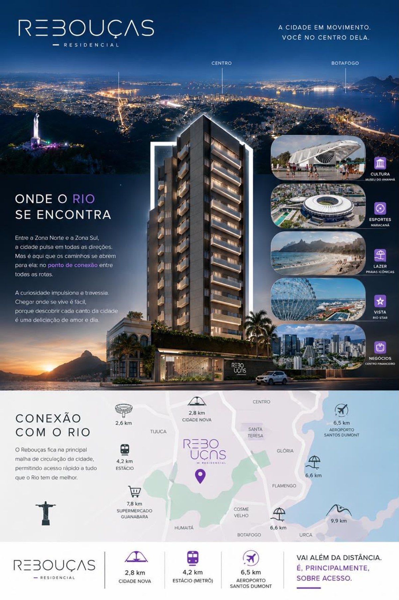

Opções no Centro
Empreendimentos no Centro do Rio
Seleção atual. Valores de referência, podem mudar por unidade e condição — confirme a tabela oficial comigo antes de decidir.

A Noite
Praça Mauá, 7 · Centro · Brookfield/AZOStudio 44m² e duplex 70m²R$ 802.000Ver empreendimento →
Saudosa Praça Onze
Praça Onze · Centro · CuryStudio a 2 quartos suíte (31–49m²)A partir de R$ 297.301Ver empreendimento →Brise Studios Design
Praça Pio X · Centro · Fator RealtyStudios 31–44m²Consulte valoresVer empreendimento →
Cores do Rio Residencial
Rua Irineu Marinho · Centro · W3Studios, 1 e 2 quartos (35–57m²)A partir de R$ 287.000Ver empreendimento →